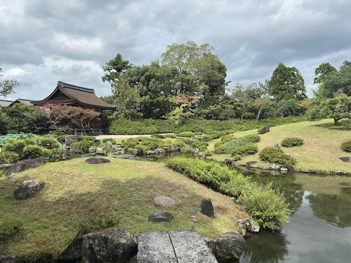
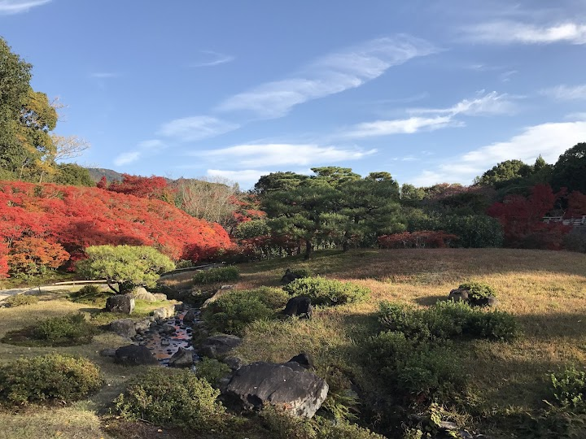
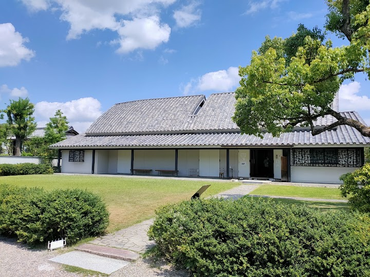
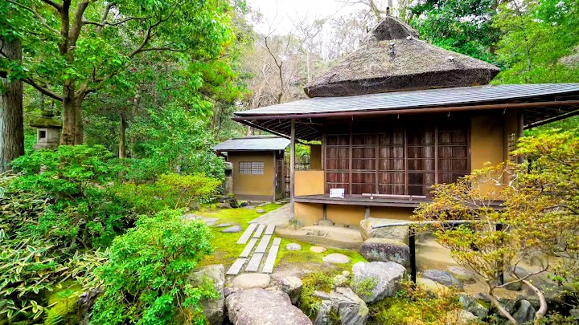
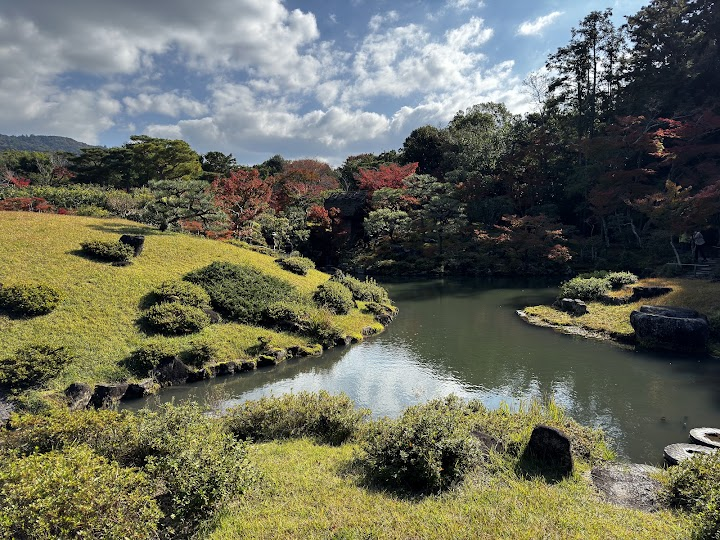

Isuien Garden and Neiraku Museum
Isuien is a peaceful stroll garden with a pond and teahouses that borrows the view of Tōdai-ji and the hills behind as scenery, and the Neiraku Museum in the same grounds holds a sizable collection of ancient Chinese bronzes, mirrors and seals, along with Korean pottery. One ticket covers both; check the last entry time as it closes at 16:00.
Open in Google Maps (street view, more photos and reviews there)






Visitor tips on finding it and getting there
This small Isuien Garden, about a 10-minute walk around, is currently under renovation, but we were not informed in advance. We paid 3,000 yen for two adults and two children for a very disappointing visit, as there was not much to see. There is another garden next to it that is free to visit, which would be a better option if you are not planning to have tea. However, we came to Isuien Garden specifically for the tea house, which closes at 3:30 pm, and ticket staff did not inform us when we arrived at 3:15 pm. It was an expensive visit to a garden under renovation, without even the chance to